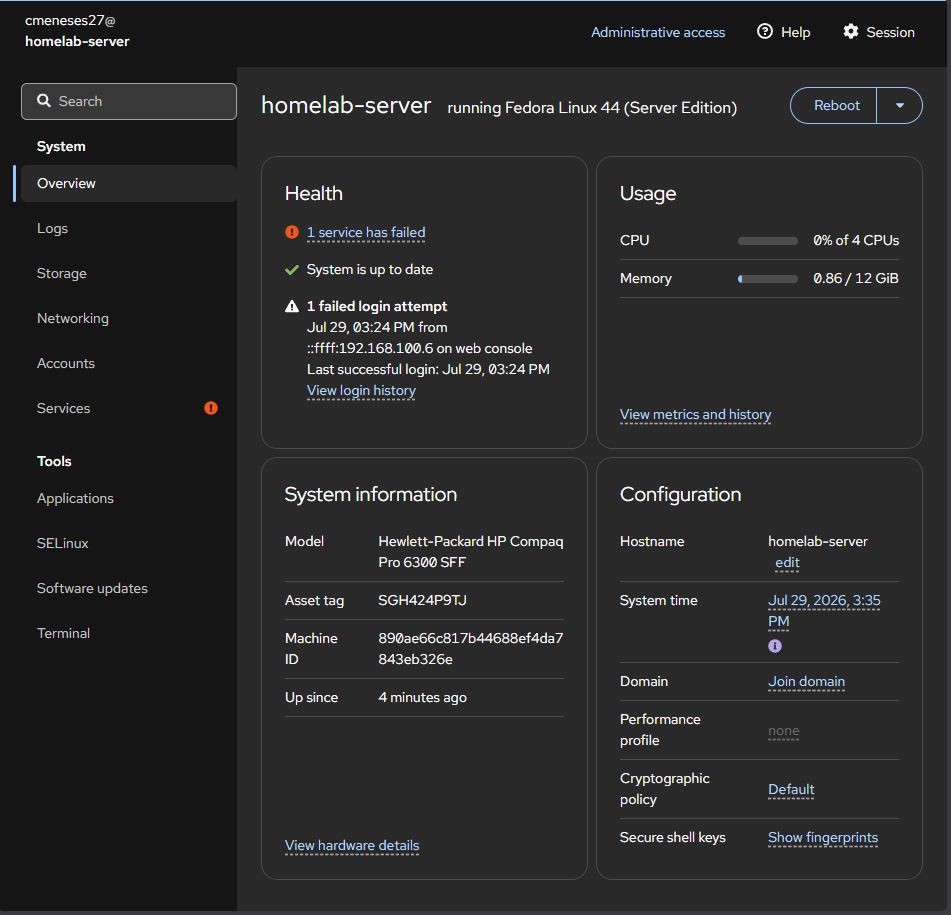
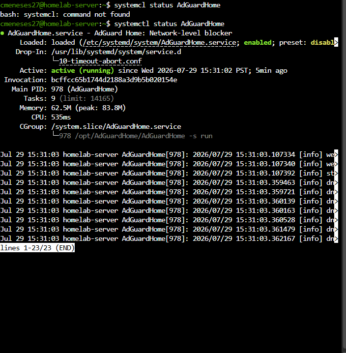
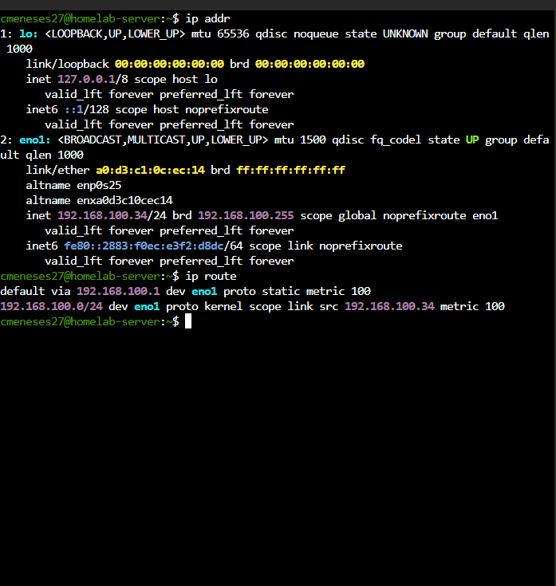
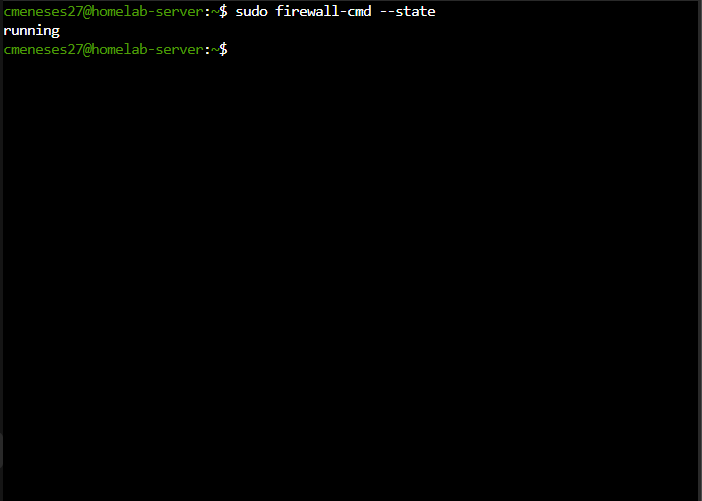

Fedora Homelab Server
Built a Fedora-based homelab for server file sharing and Linux network administration practice.

Built a Fedora-based homelab for server file sharing and Linux network administration practice.

Attempted deployment of Pi-hole and AdGuard for DNS filtering in a home network.

Explored Linux networking tools to monitor and troubleshoot a local area network.

Configured a virtual router and firewall to practice port forwarding and network security rules.